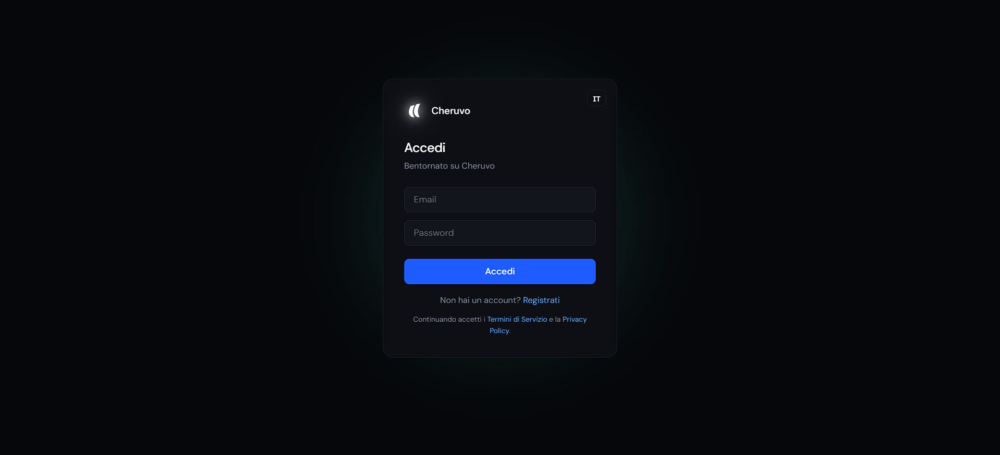
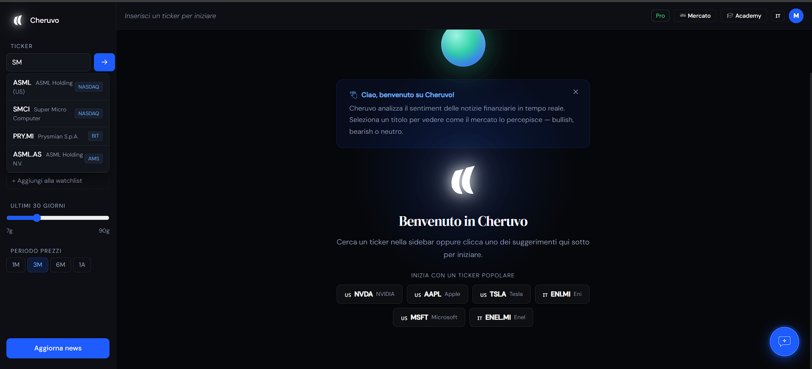
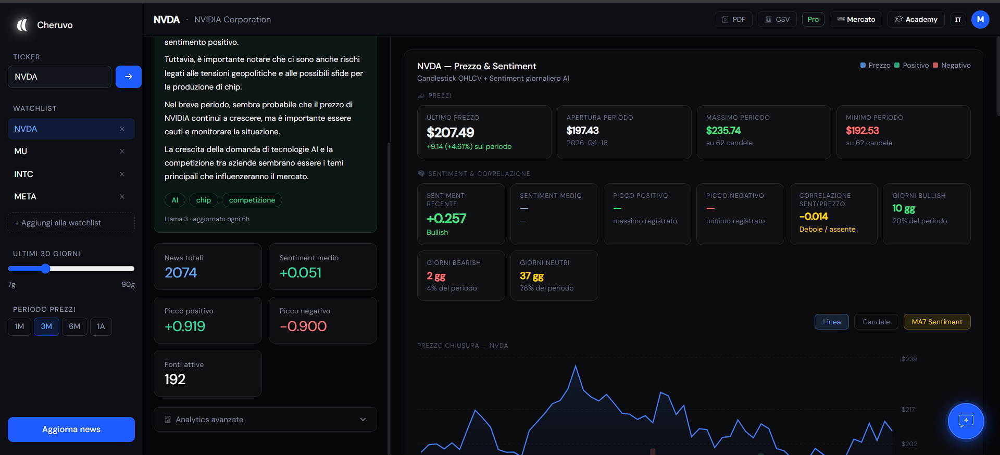
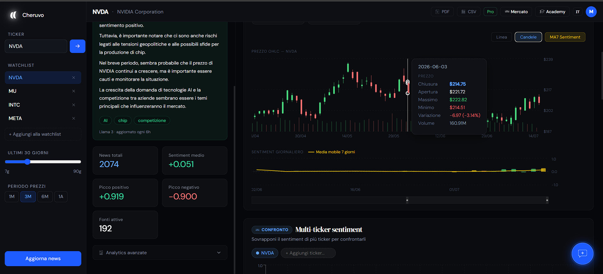
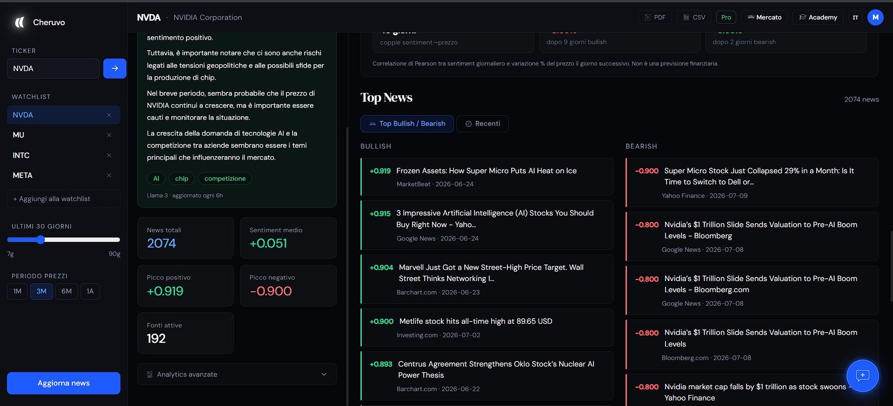
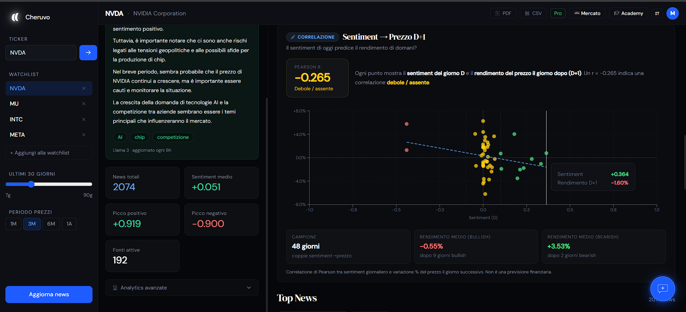
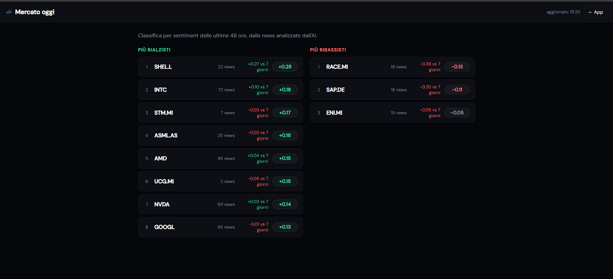
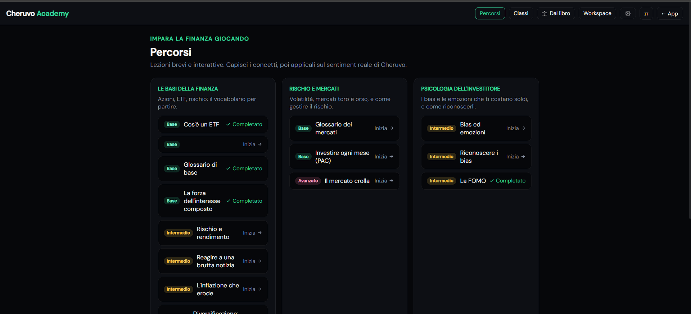
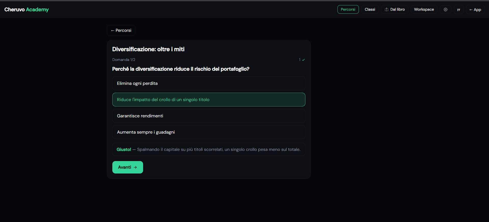
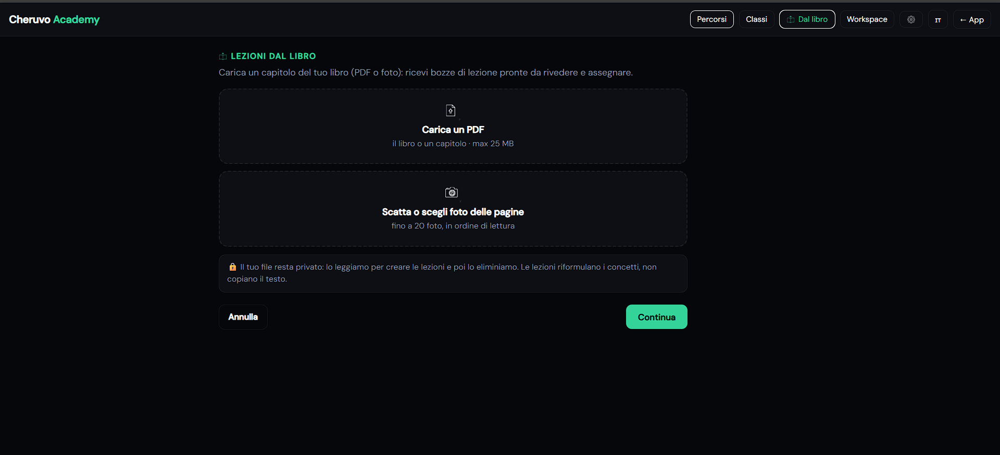

Guida a Cheruvo
Come usare Sentiment Analyzer e Academy, passo per passo. Usa la ricerca qui sopra per saltare a un argomento.
Cos'è Cheruvo
Cheruvo è una piattaforma per l'investitore retail con due strumenti. Il Sentiment Analyzer legge migliaia di notizie finanziarie con l'AI e ti dice, per ogni azione, se il mercato è rialzista o ribassista. La Academy ti insegna la finanza giocando, con quiz, simulatori e classi virtuali. Le due app condividono lo stesso account e sono entrambe gratuite; alcune funzioni avanzate sono riservate al piano Pro.
Creare l'account

Cercare un titolo
Dalla barra laterale, scrivi il simbolo (ticker) di un'azione e premi invio. Cheruvo supporta i mercati USA ed europei: ad esempio NVDA (NVIDIA), AAPL (Apple), ENI.MI (Eni, Borsa Italiana), SAP.DE (SAP, Germania). Se non ricordi il simbolo, inizia a digitare il nome e scegli dal suggerimento.

Il sentiment score
Il sentiment score è un numero da −1 (molto ribassista) a +1 (molto rialzista) che misura l'umore delle notizie su quel titolo. Vicino a +1 significa ottimismo diffuso, vicino a −1 pessimismo, intorno a 0 il mercato è neutro o diviso. Lo score giornaliero è la media dei punteggi di tutte le notizie di quel giorno.
I numeri chiave (KPI)
In alto trovi i riquadri con i numeri principali: sentiment medio del periodo, massimo e minimo raggiunti, numero di notizie analizzate e fonti. Servono a inquadrare il titolo in un colpo d'occhio prima di guardare il grafico.

Il grafico prezzo + sentiment
Il grafico sovrappone il prezzo del titolo alla curva del sentiment, giorno per giorno. Guarda soprattutto le divergenze: quando il sentiment sale mentre il prezzo è fermo (o viceversa), spesso qualcosa sta cambiando. Con lo zoom puoi restringere il periodo; la media mobile a 7 giorni (MA7) smussa il rumore.

Le notizie
Sotto il grafico trovi le notizie che generano il sentiment. La scheda Top Bullish / Bearish mostra le più rialziste e le più ribassiste del momento, con il loro score; la scheda Recenti le ordina per data. Clicca una notizia per leggere l'articolo originale. Consiglio pratico: leggi solo gli estremi (le 2-3 più forti), sono quelle che stanno muovendo il sentiment.

La correlazione
Il pannello Correlazione risponde alla domanda: per questo titolo, il sentiment di oggi ha davvero anticipato il prezzo di domani? Mostra il coefficiente di Pearson (da −1 a +1) tra sentiment del giorno D e rendimento del giorno D+1, con uno scatter plot. Un valore vicino a 0 significa nessuna relazione; più è alto (in positivo o negativo), più il legame è forte. È lo strumento onesto che ti fa giudicare da solo dove il sentiment è utile e dove no. PRO

Confronto multi-ticker PRO
Sovrapponi il sentiment di fino a 3 titoli sullo stesso grafico per confrontarli: ad esempio NVDA contro AMD, o ENI contro ENEL. Utile per capire chi sta andando meglio nello stesso settore.
AI Summary PRO
L'AI Summary genera un riassunto in linguaggio semplice delle ultime notizie del titolo, con un giudizio complessivo (rialzista / ribassista / neutro) e i temi chiave. È il modo più veloce per capire "cosa sta succedendo" senza leggere venti articoli.
Export e alert PRO
Con Pro puoi esportare i dati in CSV o un report in PDF (KPI, sentiment, top news) dai pulsanti in alto, e attivare gli alert email: ricevi una notifica quando il sentiment di un titolo in watchlist cambia bruscamente, senza dover controllare la dashboard.
Mercato oggi
Il pulsante Mercato apre lo screener: la classifica dei titoli più rialzisti e più ribassisti secondo le notizie delle ultime 48 ore, con la variazione rispetto alla settimana. È il posto da cui partire ogni giorno per vedere "dove tira il vento". Clicca un titolo per aprirlo nell'Analyzer. In fondo trovi anche gli earnings in arrivo con il sentiment pre-conti PRO.

La watchlist
Aggiungi i tuoi titoli preferiti alla watchlist dalla barra laterale per ritrovarli con un clic. Nel piano gratuito puoi seguire fino a 3 titoli; con Pro sono illimitati e alimentano gli alert e il digest settimanale via email.
Cos'è l'Academy
La Academy è la sezione educativa di Cheruvo: impari la finanza facendo, non leggendo muri di testo. Si apre dal pulsante Academy ed è gratuita, con login. Trovi percorsi tematici (le basi, il rischio, la psicologia dell'investitore…) composti da lezioni-gioco brevi da 2–4 minuti.

Studente o docente
Al primo ingresso nell'Academy scegli il ruolo: studente (segui le lezioni e la classifica) o docente (crei classi e assegni contenuti). Puoi cambiarlo quando vuoi dalle impostazioni dell'Academy.
I quattro tipi di lezione
- Quiz a tempo — domande a risposta multipla con spiegazione dopo ogni risposta.
- Flashcard — carte fronte/retro per memorizzare i termini; quelle sbagliate ritornano più spesso.
- Simulatore — cursori interattivi: muovi i parametri (es. interesse composto, inflazione, PAC) e vedi subito il risultato.
- Scenario — una mini-storia a bivi: scegli e vedi le conseguenze, applicando i concetti a una situazione reale.

XP e classifica
Ogni lezione completata dà XP (punti esperienza), con bonus per le risposte corrette. Gli XP alimentano la classifica tra utenti, disponibile in versione settimanale e di sempre. La partecipazione è volontaria (opt-in) e puoi usare un nickname: la trovi nell'hub dell'Academy.
Le classi
Nella sezione Classi gli studenti si uniscono a una classe con un codice d'invito; i docenti creano classi, pubblicano annunci e materiali, assegnano lezioni e chattano con gli studenti. È l'equivalente di un Google Classroom, ma con i contenuti interattivi di Cheruvo.
Lezioni dal libro (docenti)
Una funzione per i docenti: carichi un capitolo del tuo libro di testo (PDF o foto delle pagine) e l'AI genera bozze di lezione nei quattro formati, pronte da rivedere e assegnare alla classe. Il file resta privato e viene eliminato dopo l'elaborazione; le lezioni riformulano i concetti, non copiano il testo.

Cosa sblocca Pro
Problemi comuni
Non trovo un titolo
Controlla il simbolo: per i titoli europei serve il suffisso del mercato (es. ENI.MI per Milano, SAP.DE per Francoforte, MC.PA per Parigi). Alcuni titoli molto piccoli potrebbero non avere abbastanza notizie.
Il sentiment è a zero o poche notizie
Su titoli poco seguiti dalla stampa il sentiment può essere neutro semplicemente perché ci sono poche notizie. Usa il pulsante "Aggiorna news" nella barra laterale per forzare un aggiornamento.
Ho pagato Pro ma non vedo le funzioni
Aggiorna la pagina: il passaggio a Pro si attiva in pochi secondi dopo il pagamento. Se non compare, esci e rientra dall'account.
Come disdico il Pro
Dal tuo profilo, in qualsiasi momento. Resta attivo fino alla fine del periodo pagato, poi torna Free. Nessun vincolo.